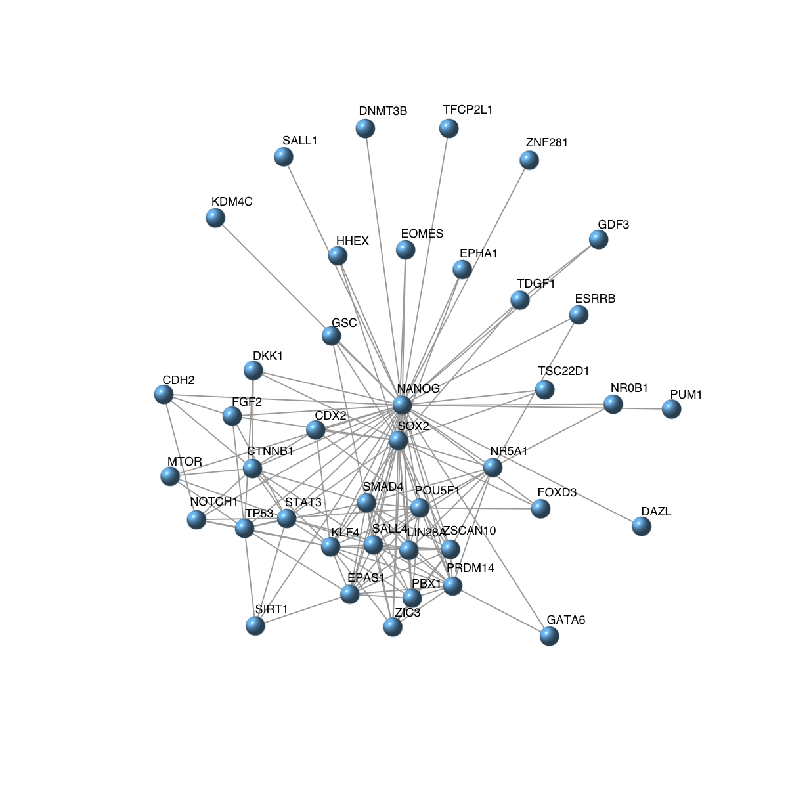
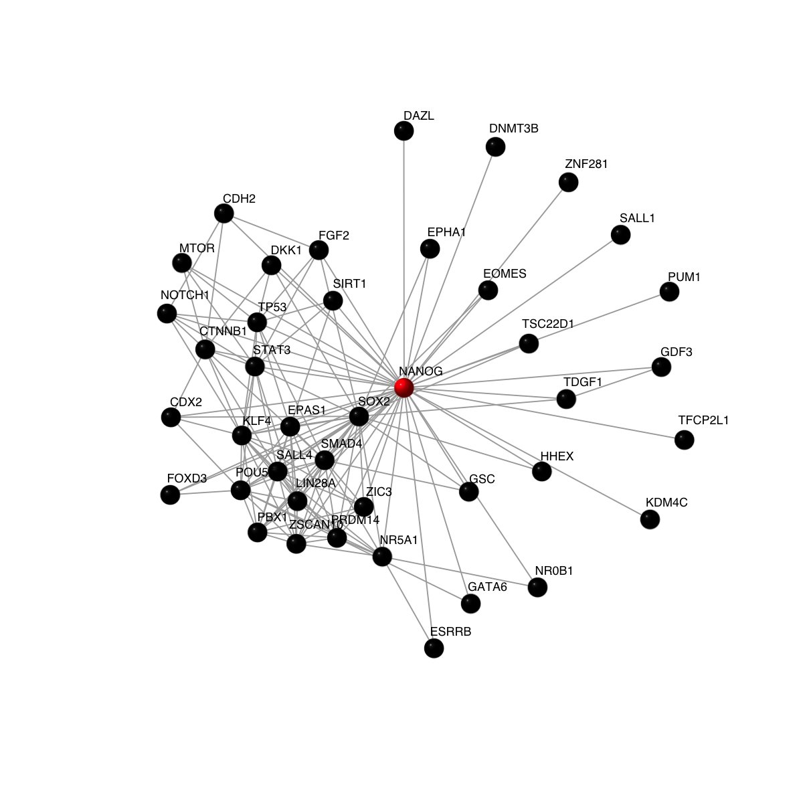
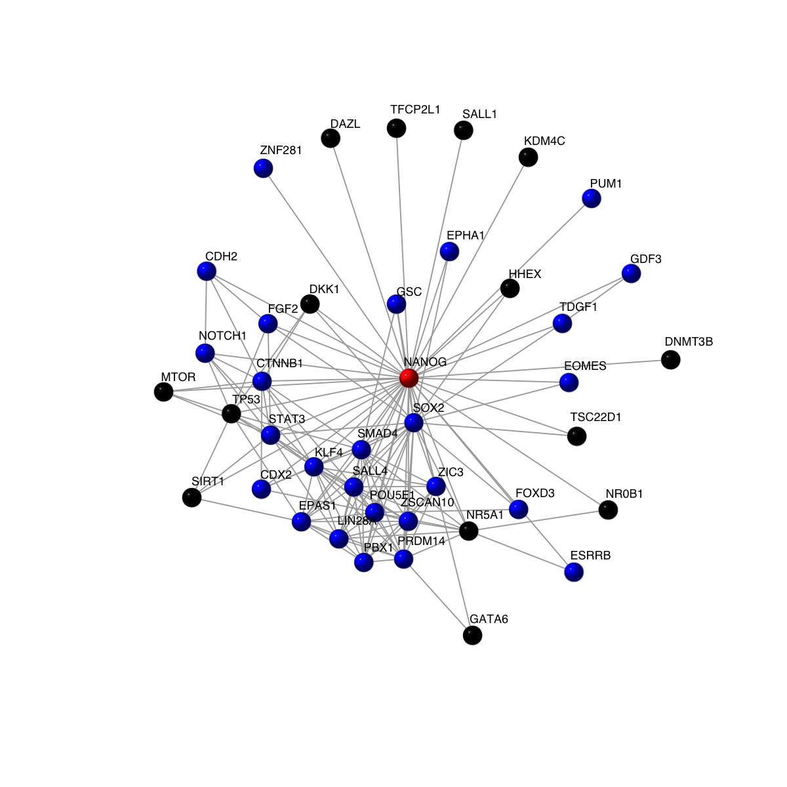
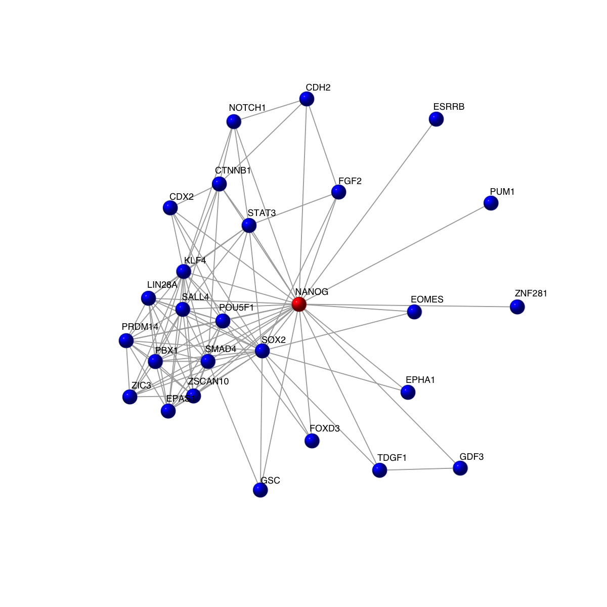
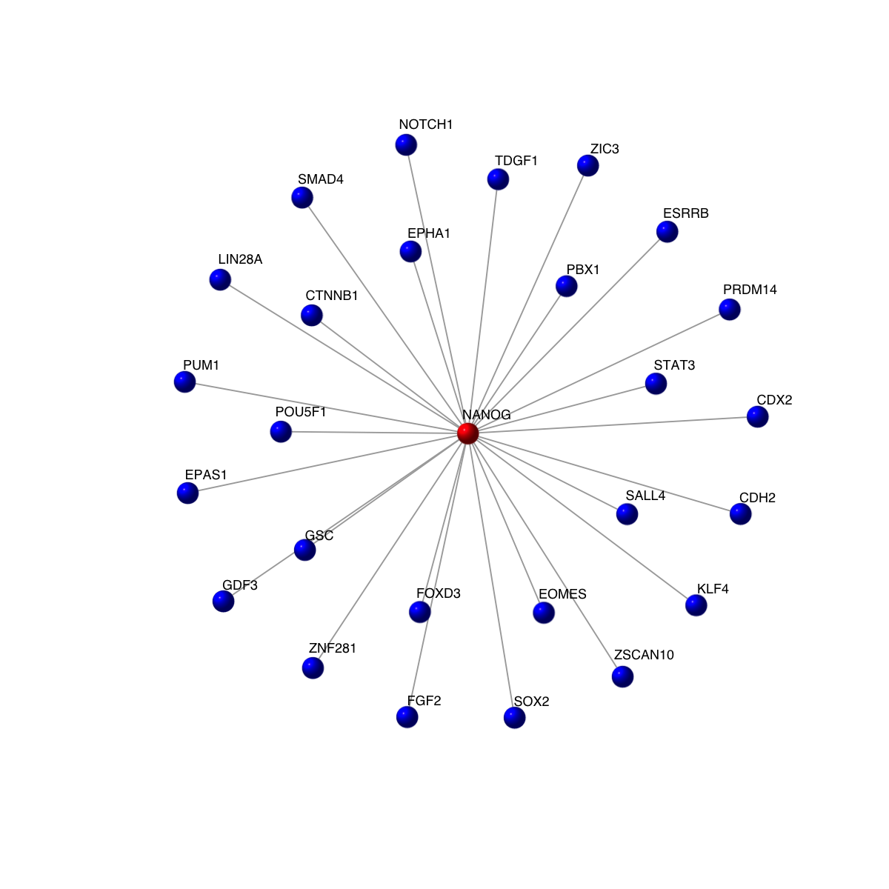

# To answer this question, without loss of generality we formulate it as an often-encountered problem: from the whole human gene network, how to derive a subnetwork that revolves around a gene 'POU5F1' and its direct interacting neighbors.
# 1) load the whole human gene network. The network is extracted from the STRING database (version 9.1). Only those associations with medium confidence (score>=400) are retained
network <- dRDataLoader(RData = "org.Hs.string")
'org.Hs.string' (from http://dnet.r-forge.r-project.org/data/Hs/org.Hs.string.RData) has been loaded into the working environment
# If required, can only focus on those edges with confidence score >= 700
network <- subgraph.edges(network, eids=E(network)[combined_score>=700])
network
IGRAPH UN-- 13026 198516 --
+ attr: name (v/c), seqid (v/c), geneid (v/n), symbol (v/c),
description (v/c), neighborhood_score (e/n), fusion_score (e/n),
cooccurence_score (e/n), coexpression_score (e/n), experimental_score
(e/n), database_score (e/n), textmining_score (e/n), combined_score
(e/n)
# 2) find the gene 'POU5F1' and its direct neighbors
ind <- match(V(network)$symbol, 'POU5F1')
nodes_query <- V(network)$name[!is.na(ind)]
g <- dNetInduce(g=network, nodes_query=nodes_query, knn=1, remove.loops=F, largest.comp=T)
g
IGRAPH UN-- 14 20 --
+ attr: name (v/c), seqid (v/c), geneid (v/n), symbol (v/c),
description (v/c), neighborhood_score (e/n), fusion_score (e/n),
cooccurence_score (e/n), coexpression_score (e/n), experimental_score
(e/n), database_score (e/n), textmining_score (e/n), combined_score
(e/n)
# 3) visualise the extracted subnetwork
visNet(g, vertex.label=V(g)$symbol, vertex.shape="sphere")
# 4) highlight the query gene in red, and its neighours in black
vcolors <- rep('black', vcount(g))

vcolors[match('POU5F1', V(g)$symbol)] <- 'red'
visNet(g, vertex.label=V(g)$symbol, vertex.shape="sphere", vertex.color=vcolors)
# 5) output the detailed information for genes in the subnetwork onto the file called 'POU5F1.subnetwork.txt'
out <- data.frame(GeneID=V(g)$geneid, Symbol=V(g)$symbol, Description=V(g)$description)

write.table(out, file="POU5F1.subnetwork.txt", quote=F, row.names=F,col.names=T,sep="\t")
out
GeneID Symbol Description
1 27022 FOXD3 forkhead box D3
2 6657 SOX2 SRY (sex determining region Y)-box 2
3 135935 NOBOX NOBOX oogenesis homeobox
4 57167 SALL4 spalt-like transcription factor 4
5 79923 NANOG Nanog homeobox
6 22887 FOXJ3 forkhead box J3
7 7178 TPT1 tumor protein, translationally-controlled 1
8 84217 ZMYND12 zinc finger, MYND-type containing 12
9 2103 ESRRB estrogen-related receptor beta
10 10637 LEFTY1 left-right determination factor 1
11 10664 CTCF CCCTC-binding factor (zinc finger protein)
12 2981 GUCA2B guanylate cyclase activator 2B (uroguanylin)
13 23401 FRAT2 frequently rearranged in advanced T-cell lymphomas 2
14 5460 POU5F1 POU class 5 homeobox 1
# A more complicated question could be: the interaction neighbors are also required to be functionally related to 'stem'. For this, we can further use terms from Gene Ontology (and its subontology: Biological Process).
keyword <- 'stem'
org.Hs.egGOBP <- dRDataLoader(RData = "org.Hs.egGOBP")
'org.Hs.egGOBP' (from http://dnet.r-forge.r-project.org/data/Hs/org.Hs.egGOBP.RData) has been loaded into the working environment
ind <- grep(keyword, org.Hs.egGOBP$set_info$name, ignore.case=T, perl=T)
genes <- unique(unlist(org.Hs.egGOBP$gs[ind]))
# Next, identify genes in the subnetwork that are functionally related to 'stem'
ind <- match(V(g)$geneid, genes)
intersect_genes <- V(g)$symbol[!is.na(ind)]
intersect_genes
[1] "FOXD3" "SOX2" "SALL4" "NANOG" "TPT1" "ESRRB" "POU5F1"
# Now, highlight the query gene in red, its 'stem'-related neighours in blue, and the rest in black
vcolors <- rep('black', vcount(g))
vcolors[match(intersect_genes, V(g)$symbol)] <- 'blue'
vcolors[match('POU5F1', V(g)$symbol)] <- 'red'
visNet(g, vertex.label=V(g)$symbol, vertex.shape="sphere", vertex.color=vcolors)
# Alternatively, remain only genes related to 'stem' and the query gene 'POU5F1'.
both_genes <- c(intersect_genes, 'POU5F1')

both_genes
[1] "FOXD3" "SOX2" "SALL4" "NANOG" "TPT1" "ESRRB" "POU5F1" "POU5F1"
# extract the subnetwork containing the gene 'CDKN2D' and its differentiation-related neighbors
ind <- match(V(g)$symbol, both_genes)
nodes_query <- V(g)$name[!is.na(ind)]
g1 <- dNetInduce(g, nodes_query=nodes_query, knn=0, remove.loops=F, largest.comp=T)
vcolors <- rep('blue', vcount(g1))
vcolors[match('POU5F1', V(g1)$symbol)] <- 'red'
visNet(g1, vertex.label=V(g1)$symbol, vertex.shape="sphere", vertex.color=vcolors)
# Also, only edges linked to the query gene 'POU5F1' are remained.
ind <- match('POU5F1', V(g1)$symbol)

eids <- E(g1)[from(ind)]
g2 <- subgraph.edges(g1, eids=eids)
vcolors <- rep('blue', vcount(g2))
vcolors[match('POU5F1', V(g2)$symbol)] <- 'red'
visNet(g2, vertex.label=V(g2)$symbol, vertex.shape="sphere", vertex.color=vcolors)
# In addition to the direct interacting neighbors, the indirect neighbors can be specifed via the parameter 'knn' in the function dNetInduce.

){kind=link}
){kind=link}
){kind=link}
){kind=link}
){kind=link}